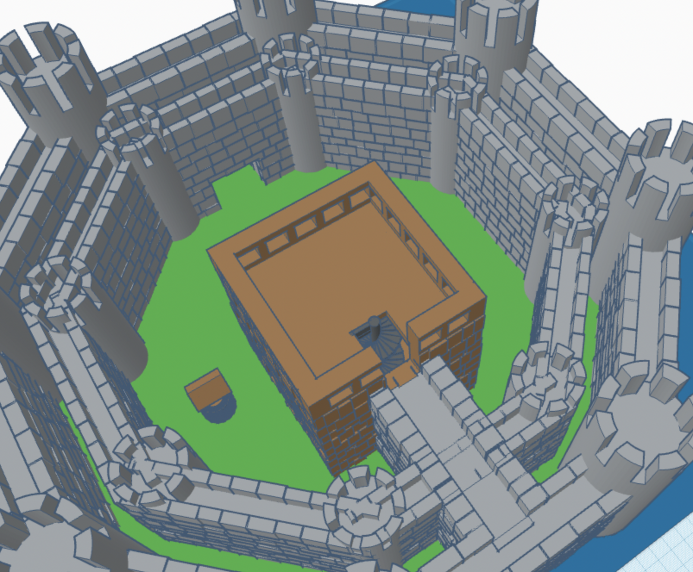

This is a historical castle I made in history class. I was required to make a castle with a wall, keep, moat, drawbridge, and ground. I made an inner and an outer wall for double protection. I put the keep in the middle. A well next to the keep so they can get fresh water every day. The drawbridge is in front of the castle for easy access.

This was my midterm project. I had to make my own country and a history of 100 years. It is an island that is shdshaped as a turtle. I made it look like a turtle becasue I like turtles. There are many different types of biomes with-in the turtle.